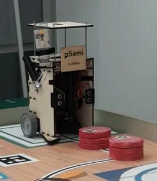
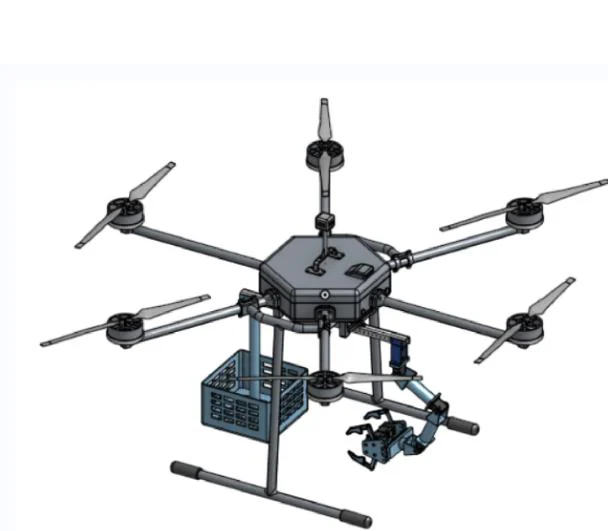
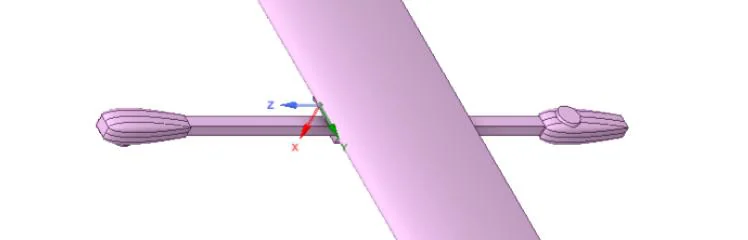
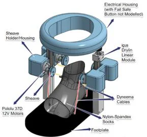

What I’ve been working on
I studied Aerospace Engineering at Southampton before doing my MSc in Mechatronics and Robotics at Leeds. I’ve put together some of the projects I worked on during both degrees, from building robots and UAV components to CAD, CFD and control systems. I've also included what I worked on in each team, rather than just the final result.
Projects

Jumping self-balancing wheeled biped
Robotics & control · MSc dissertation

Eurobot autonomous mobile robot
Physical build · Competition robotics

Multirotor UAV with manipulator
Aerial robotics · Individual design work

VTOL aerodynamic optimisation
Aerospace · CFD

UAS Challenge airframe manufacturing
Hands-on fabrication · Team project

Ankle rehabilitation exoskeleton
Biomechatronics · CAD & FEA